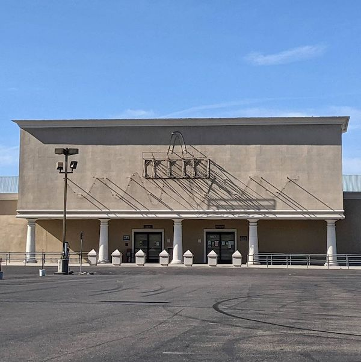
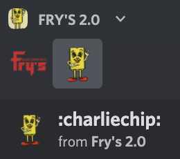

Welcome to SaveFrys.com
This website is a collaborative, living project dedicated to the memory of Fry's Electronics.
Founded by Anastasia Davydova Lewis in 2021, the project has been collectively maintained by the community whose hearts were broken when Fry's Electronics became no more.
If you would like to contribute to the website, or report a bug, feel free to do so via the github page. You can also join the Fry's 2.0 Discord server to get in touch with the community. If you prefer, you can share your Fry's Electronics memories directly on this site.
Updates
Thursday Jun 6 2021 13:37
I have been thinking a lot about the purpose and meaning of savefrys.com today. I went to an art show this weekend, it was logo remixing at Paul Slocum's And/Or gallery in South Pasadena. I saw a painting there, a Joel Holmberg piece that reminded me of a conversation I had a few months ago with my friend and artist Jeffrey, about the way I wanted SaveFrys.com to look like, and how I wanted it to be beautiful like a painting, a website that looks like a painting that looks like a website. Today's design of SaveFrys.com doesn't reflect that, as I've modeled most of my design decisions off the original Frys.com website. Somewhere along the way, I stopped thinking about what I want to commemorate Fry's as, and moved the project into a more predictable, default internet memorial style. I have been pretty despondent since the exhibition where SaveFrys.com was featured, in part because nobody has contributed to the "share your memory" page on here, and in part because I know that in some way I failed to scratch the itch this project was originally about.
On the day I spoke to Christian Moeller about my ambitions with the outdoor sculpture purchase, I had already completely forgotten my own ambitions regarding Frys 2.0, or how I, personally, as an artist as well as just a person, see the legacy and cultural meaning of Fry's Electronics. Talking today with Ben I was reminded of an idea I had back in February with regards to the UFO sculpture on the exterior of Store #11, Burbank CA. I wanted to remove the sculpture and the install it on it's side to become a playground rock climbing gym for children. Being able to actively touch and play with it, specifically for children, would be a lovely way to commemorate what that location's decor meant to everybody. If you look through the archive of people's memories about Fry's, many of them share a central theme of either feeling like a kid, or bringing a kid to the store to learn about technology and build their own future.
Fry's symbolized the future we all wanted, a place we could go to buy the parts to build it. Part of why it's so heartbreaking to see it go is because now that place has Amazon, which symbolically represents that tech utopia future being eaten up by a shrewd businessman, and turned into a dystopia where people like you and me don't fit in.
As a Russian person, I have fond memories of playing with the relics of a future full of dreams nobody got to have. Russian playgrounds are full of geodesic dome climbing structure, which I later found out were based on the designs by the futurist Buckminster Fuller. Many Russian public squares still have mosaics and sculptures celebrating a future of automated agriculture, space exploration, and happy members of society enjoying the fruits of their creativity. Even though I was born after the Soviet Union stopped existing, I still hold in my heart deeply these aspirations and dreams – like many Russians, I hope to achieve them in California, where the tech industry prospers under capitalism. Fry's Electronics and it's themed sculptures reminded me of these dreams the same way the socialist realism I grew up around reminded me of them. I know now that socialist realism, and consequently soviet futurism, was propagandist in it's erasure of many people's struggles, and led many people on to a dream that ended in the economic disaster of the 1990's. As much as I recognize the betrayal, I still prefer to hold onto my dreams.
Watching Fry's die, and realizing my own inability to save even the sculptural relics of it, is like reliving that same betrayal of my dreams – but now I am watching capitalism fail them.
Thursday Jun 3 2021 17:00
Today, the SaveFrys.com website boasts a significant update as it is being showcased as an art project in the UCLA Design | Media Arts Senior Undergraduate Exhibition.. Certain pages have been removed, like the open letter to Kathy Kolder, John, Randy, and Dave Fry, to draw the public's attention to the archiving efforts of the project.
The website will only grow with time, so we encourage all visitors to keep monitoring these pages to hear about all the Fry's Electronics memorial related updates.
Wednesday Jun 2 2021 19:51
Activity reported outside of Store #11 (Burbank) – a Zio Studios filming equipment truck has been spotted, as well as a yellow filming location sign. It appears that the reason this particular Fry's Electronics location has been closed off with a fence wasn't just something to do with the fact that Fry's owns the building, but additionally to ensure no trespassing onto a film site. The Zio Studios website boasts they have worked on productions associated with CBS, Warner Brothers, Disney (via Marvel), and Universal Studios, among several others.
Store #11 is located nearby WB, NBC, ABC and Disney, and employees would frequently run into celebrities, meaning the the location was a favourite among the Hollywood crowd. Jay Leno, Tim Allen, Ben Afflack, Stevie Wonder, and Seal were all reportedly customers of Store #11 – the store was so popular with celebrities that it was even shut down once to accomodate Michael Jackson as he shopped with his family.
Tuesday Jun 1 2021 20:07
According to an Instagram post from @janettwokay, the Sunnyvale location has removed the storefront decor with the iconic wavelength logo.
May 21 2021 11:23
I have decided to forfeit my $500 bid on the City of Industry location's outdoor sculpture. I had a phone call this morning with Christian Moeller, and realized that spending an inordinate amount of time, money, and stress on the preservation of somebody else's sculpture wouldn't contribute to my own career as an artist – perhaps as a curator, collector, or cultural historian. I also know that I don't have a spare $20,000+ to remove the sculpture from the building, and I don't have a local piece of real estate where I could store the sculpture.
I am very sad for Eric Christensen, and the fact that his beautiful work is now very likely to be destroyed. I bid on the sculpture in hopes that I could somehow save it, but I now realize that I am just one person, and even all my powerful passion for a gargantuan assemblage of concrete, wood and plaster isn't enough to convince established museums, collectors, and even art audiences to a similar level of aesthetic commitment. I don't know what Eric is doing or how he feels, and I doubt if the other people bidding on themed pieces of decor from the auction do, or even know who he is. All I can do is chronicle this experience here, in hopes that someday, it will mean something to the rest of the world.
May 01 2021 14:28
I got some winning bids in the Bidspotter auction for the City of Industry Fry's. I am particularly excited (and terrified) about my $500 bid on the outdoor sculpture.
Winners have one week to pick up (incl. removal) what they won. I'm getting in touch with some artists and set builders I know who have experience with large-scale sculptures and sets, so hopefully I'll know by tomorrow afternoon (when my payment is due) how I will be going about this entire process.
I also won some tables, and a lot of 22 boxes full of magazines. Hopefully the magazines are the vintage tech nerd type! I remember once I was at an art show at 9800 Sepulveda, a bank building that was abandoned in the '90s. I found a Byte Magazine from March 1995 – when I was born. I hope I find something equally special at Fry's.
Feb 27 2021 14:27
The Fry's 2.0 Discord Server has been created.
The idea for the server first emerged in a Clubhouse room hosted by Benjamin Bascom, titled "Fry's Electronics Grief Support Group". After some collective mourning and grieving, those onstage began to talk about how weird it is that the fun and excitement of shopping for electronics isn't present in e-commerce. Even with TikTok and Discord, it's just not the same. Rahul Chhabra joined the conversation and despite never visiting a Fry's himself, quickly grew enamored with the idea of creating a digital experience that would come close to the joy of visiting a Fry's Electronics store. His positive, inspiring energy began to transform the room's grief into the passion to build something new and beautiful.
The decision to choose Discord as a platform was inspired by the community shopping experiences on this platform: there are already a lot of cool Discord servers for buying electronics, like buildapc and StockDrops. Why not add one where we recreate all the zany things we love about Fry's? And so Frys 2.0 was born.
Feb 22 2021 00:00
Fry's Electronics has shut down.
Their website has been removed, all for one page that reads the following:
After nearly 36 years in business as the one-stop-shop and online resource for high-tech professionals across nine states and 31 stores, Fry’s Electronics, Inc. (“Fry’s” or “Company”), has made the difficult decision to shut down its operations and close its business permanently as a result of changes in the retail industry and the challenges posed by the Covid-19 pandemic. The Company will implement the shut down through an orderly wind down process that it believes will be in the best interests of the Company, its creditors, and other stakeholders.
The Company ceased regular operations and began the wind-down process on February 24, 2021. It is hoped that undertaking the wind-down through this orderly process will reduce costs, avoid additional liabilities, minimize the impact on our customers, vendors, landlords and associates, and maximize the value of the Company’s assets for its creditors and other stakeholders.
The Company is in the process of reaching out to its customers with repairs and consignment vendors to help them understand what this will mean for them and the proposed next steps.
If you have questions, please contact us using the following email addresses:
- For customers who have equipment currently being repaired, please email customerservice@frys.com, to arrange for return of your equipment.
- For customers with items needing repair under a Performance Service Contract, please call (800) 811-1745.
- For consignment vendors needing to pick up their consignment inventory at Fry’s locations, please email omnichannel@frys.com.
Please understand if we are a bit slow to respond given the large volume of questions. The Company appreciates your patience and support through this process.
Sincerely,
Fry’s Electronics